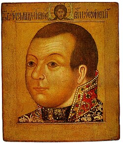
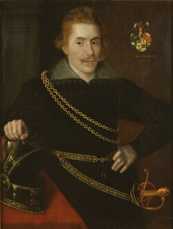
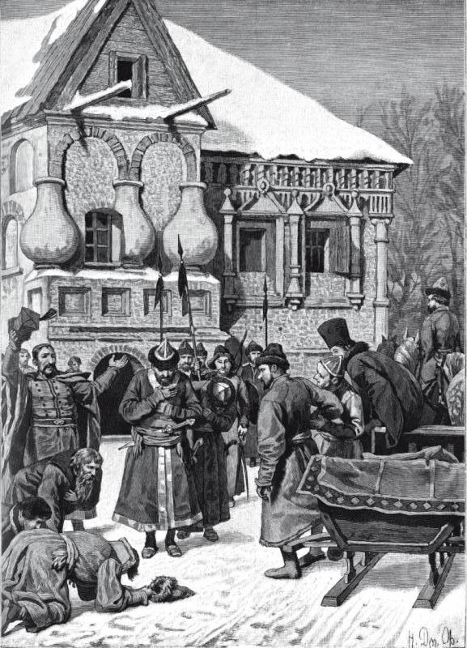
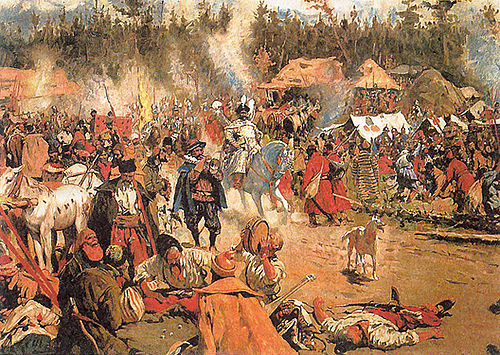

Лжедмитрий II
Слухи о чудесном спасении царевича Дмитрия не утихали. Летом 1607 года в Стародубе объявился новый самозванец, вошедший в историю как Лжедмитрий II или «Тушинский вор» (по названию села Тушино, где самозванец расположился лагерем, когда подступил к Москве). К концу 1608 года власть Лжедмитрия II распространялась на Переяславль-Залесский, Ярославль, Владимир, Углич, Кострому, Галич, Вологду. Из крупных центров верными Москве оставались Коломна, Переяславль-Рязанский, Смоленск, Новгород, Нижний Новгород и Казань. В результате деградации пограничной службы 100-тысячная Ногайская Орда разоряла «украины» и Северские земли в 1607—1608 годах. В 1607 году крымские татары впервые за долгое время перешли Оку и разорили центральные русские области. Польско-литовскими войсками были разгромлены Шуя и Кинешма, взята Тверь, войска литовского гетмана Яна Сапеги осаждали Троице-Сергиев монастырь, отряды Лисовского захватили Суздаль. Даже города, добровольно признавшие власть Лжедмитрия II, разграблялись отрядами интервентов. Поляки взимали налоги с земли и торговли, получали «кормления» в русских городах. Всё это вызвало к концу 1608 года широкое национально-освободительное движение. В декабре 1608 года от «тушинского вора» отложились Кинешма, Кострома, Галич, Тотьма, Вологда, Белоозеро, Устюжна Железнопольская, также в поддержку восставших выступили Великий Устюг, Вятка, Пермь Великая. В январе 1609 года князь Михаил Скопин-Шуйский, командовавший русскими ратниками из Тихвина и онежских погостов, отразил 4-тысячный польский отряд Кернозицкого, наступавший на Новгород. В начале 1609 года ополчение города Устюжна выбило поляков и «черкасов» (запорожцев) из окрестных сёл, а в феврале отбило все атаки польской конницы и наёмной немецкой пехоты. 17 февраля русские ополченцы проиграли полякам сражение под Суздалем. В конце февраля сибирские и архангельские стрельцы воеводы Давыда Жеребцова освободили от интервентов Кострому. 3 (13) марта ополчение северных и северо-русских городов взяло Романов, оттуда двинулось к Ярославлю и взяло его в начале апреля. Нижегородский воевода Алябьев 15 (25) марта взял Муром, а 27 марта (6 апреля) освободил Владимир. Правительство Василия Шуйского заключает с Швецией Выборгский договор, по которому в обмен на военную помощь шведской короне передавалась крепость Корела с уездом. Русское правительство должно было также оплачивать наёмников, составляющих большую часть шведского войска. Выполняя обязательства, Карл IX предоставил 5-тысячный отряд наёмников, а также 10-тысячный отряд «всякого разноплемённого сброда» под командованием Я. Делагарди.


Весной князь Михаил Скопин-Шуйский собрал в Новгороде 5-тысячное русское войско. 10 (20) мая русско-шведские силы заняли Старую Руссу, а 11 мая разбили польско-литовские отряды, подступавшие к городу. 15 мая русско-шведские силы под командованием Чулкова и Горна разбили польскую конницу под командованием Кернозицкого у Торопца. К концу весны от самозванца отложилось большинство северо-западных русских городов. К лету численность русских войск достигла 20 тысяч человек. 17 (27) июня в тяжёлом сражении у Торжка русско-шведские силы принудили польско-литовское войско Зборовского к отступлению. 11—13 июля русско-шведские силы, под командованием Скопина-Шуйского и Делагарди, разбили поляков под Тверью. В дальнейших действиях Скопина-Шуйского шведские войска (за исключением отряда Христиера Зомме численностью в 1 тысячу человек) участия не принимали. 24 июля (3 августа) русские отряды переправились на правый берег Волги и вступили в Макарьевский монастырь, располагавшийся в городе Калязине. В битве под Калязином 19 (29) августа поляки под командованием Яна Сапеги были разбиты Скопиным-Шуйским. 10 (20) сентября русские вместе с отрядом Зомме заняли Переяславль, а 9 (19) октября воевода Головин занял Александровскую слободу. 16 (26) октября русский отряд прорвался в осаждённый поляками Троице-Сергиев монастырь. 28 октября (7 ноября) Скопин-Шуйский разбил гетмана Сапегу в битве на Каринском поле под Александровской слободой. Одновременно с этим, используя русско-шведский договор, польский король Сигизмунд III объявил войну России и осадил Смоленск. Большинство тушинцев покинуло Лжедмитрия II и отправились на службу польскому королю. В этих условиях самозванец решился на побег и бежал из Тушино в Калугу, где снова укрепился и к весне 1610 года отбил у Шуйского несколько городов.

